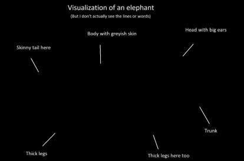

On Aphantasia
Aug 7, 2025For as long as I can remember, my inner world has been vivid, textured, coloured. A few months ago I wrote about imagination.
I replay conversations, rehearse future events, and sometimes speculate on possibilities. Thinking in imagination is a significant aspect of how I navigate my life: memory, planning, emotion, reasoning, self-reflection, self-expression, good and bad life choices. I certainly know not everyone relies on their imagination the way I do, but it wasn’t until recently I learned that the ability to imagine is not universal.
A friend told me that their mind can’t picture anything when they close their eyes. No visual memory, no visual creation. Just still darkness. They can recall, reason, feel, love, dream, but they do not visualize anything. It is called aphantasia.
Aphantasia is the inability to voluntarily visualize mental images. People with aphantasia cannot "see" anything in their mind's eye, even when trying to recall a memory or imagine a scenario.
Human cognitive diversity is fascinating. It is hard for me to grasp. I find myself circling back again and again trying to understand what it means to be aphantasic. We often assume that the way we experience the world is similar to the way everyone else experiences it. This is one of the greatest illusions of consciousness: that our private sense is shared beyond ourselves.
At last, this is my attempt to theorize the inner world of aphantasia.
I. The Perception
Imagine (ironically) experiencing the world with a peculiar absence of mental representation.When the world gets recorded in the mind, it doesn’t leave any visual impression behind. It passes through thoughts, through words, through feelings, through logic, but not through visual representation.
We often glorify the importance of visual imagination in one’s inner richness. My friend with aphantasia certainly does not lack inner richness. They remember, feel, love, create, and hope passionately just like everyone else. Other than the fact that this incredibly smart person, who excels at learning abstract concepts, mastering new skills, solving complex problems, is somehow terribly bad at naming countries on a blank map, not in a billion years would I believe they can’t think any bit of mental image.
What I came to understand is that visual imagination is just one pathway among many towards the inner world. The human mind is capable of orienting with a variety of sources: emotion, sensation, linguistics, etc. If one does not see the world inside their mind, they can understand it through other non-visual forms of representation.
So, what is the nature of thinking and feeling when one cannot visualize?
Without the reliance on visual imagery, thinking becomes a pure non-visual process. I suppose people with aphantasia have a strong inner monologue, thinking in words rather than images. They might naturally develop strong abstract reasoning skills, because they process the world through concepts and reasoning in a more abstract, verbal, logical, analytical, architectural, perhaps a bit mathematical way. Ideas get constructed, interconnected, grow, but without a visual medium.
(According to my friend, this made perfect sense)
Feeling, likewise, becomes less entangled with visual memory and more grounded in the bodily sensation, mood, and words. Without being able to replay visual memory, memories are processed through how the body remembers, how language stirs emotion. When recalling a person, they may not see that person’s face but can vividly remember what they did together, what they talked about, and how being with them felt. In this sense, people with aphantasia may experience a sharpened presence through the non-visual elements. They appreciate beautiful sunsets, mountains and nature like everyone else does. But when the sight is gone, their minds operate like a detailed database of facts and impressions. This doesn’t flatten the memory. It creates a different texture of memory. What remains in their memory is probably something more elusive: the experience and the meaning.
II. The Externalization
If one cannot visually imagine anything, they might feel a stronger need to externalize their thinking. Whether through writing, drawing, or creating, making the inner world visible to themselves and to others seems like a natural and useful thing to do.
But what does that externalization look like when visual imagination is absent?
I assumed there would be some nuanced difference in their way of expression. But the more I paid attention, the more that assumption dissolved. No matter how hard I tried to notice the little evidence that might suggest my friend’s expression taking a different orientation, there is little difference between their narratives and my own storytelling. The memories have been well-translated into language based scenes. The details in everything, including the concrete visuals with colours and shapes, are equally great.
Where I began to understand the subtle difference is their instinct to build. Perhaps the innate need for externalization drives them to become an excellent builder rather than an ideator. I am an ideator myself. I think in ideas. I like ideas. I am speculating ideas at this very moment. But my friend works in action. The builder must act in order to access their thinking. They make in order to see. They build in order to know. I spend a great deal of time thinking about why I do what I do, but my friend will just run it. Whether it's picking up a new hobby, trying a new fashion style, diving headfirst into a niche knowledge, the builder doesn't think for clarity before beginning; clarity comes through doing. Iteration becomes their form of reflection.
Of course this is largely due to our personality differences; however, I wonder how much of that is coming from the absence of visually imagined outcomes. If you can't visualize the outcome in your mind, perhaps the way to reach it is by engaging in the act to visualize it in the presence. The process becomes the vision. The builder doesn't simulate a path. They create one.
- A reminder for me to perceive deeply to see and run it passionately to know